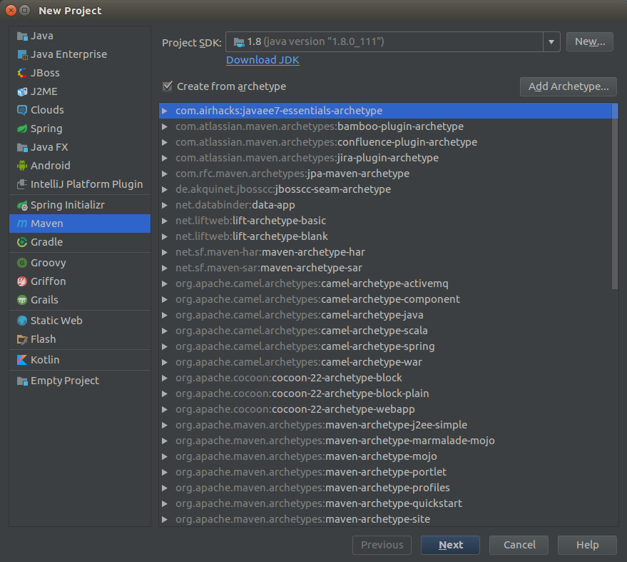
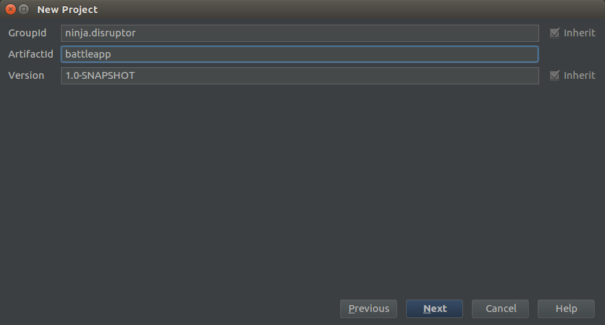
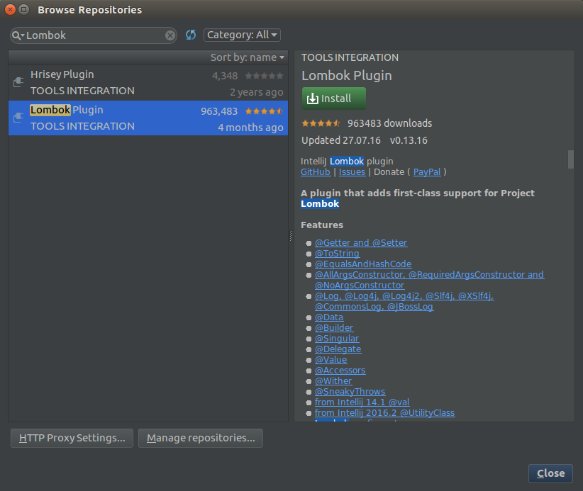
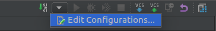
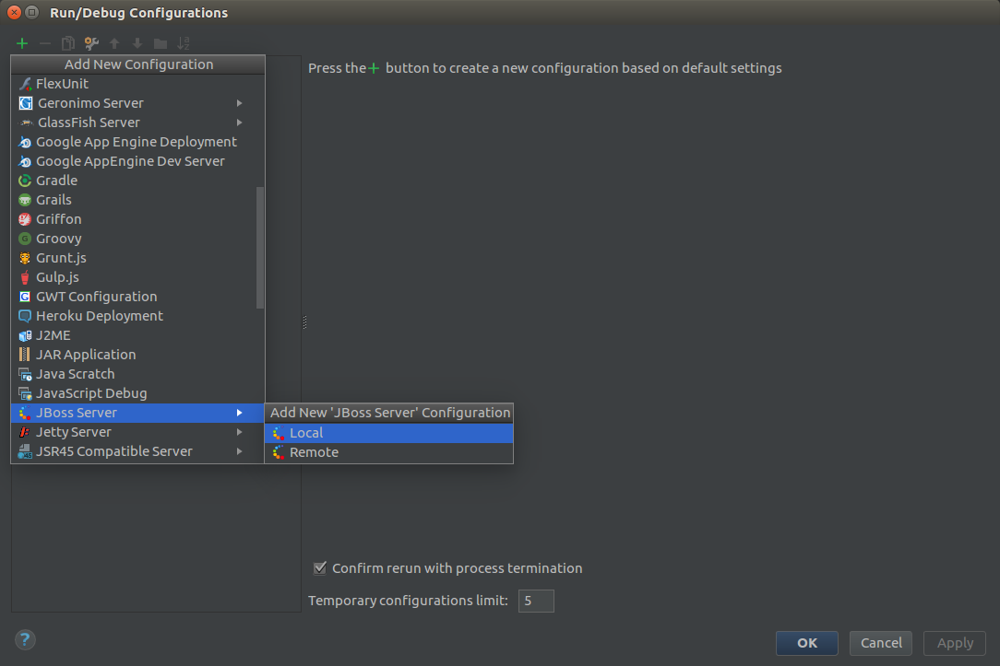
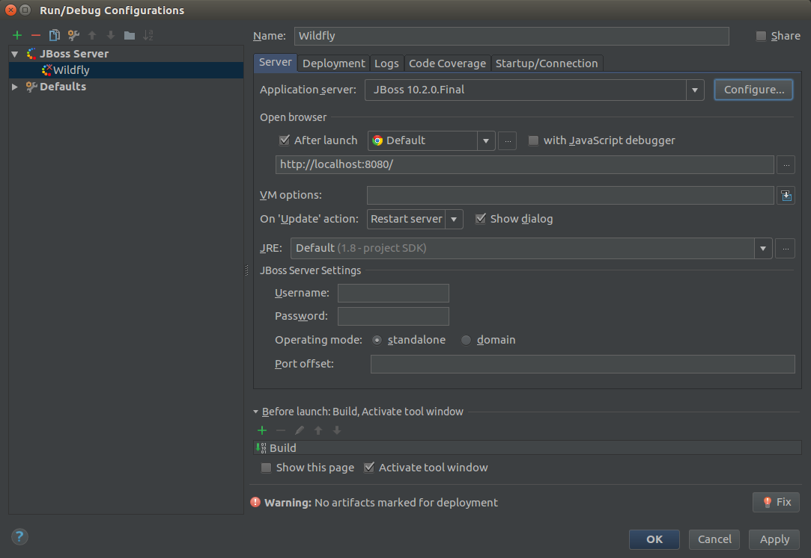
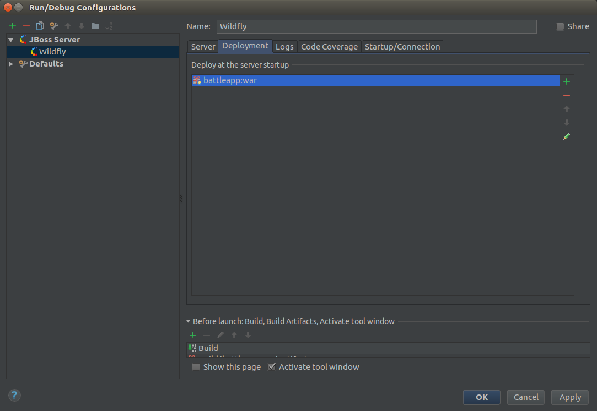
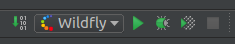

Creating our first JavaEE microservice
Our first microservice is a REST service written in Java. I'm using JavaEE and Wildfly
as application server. JavaEE is the perfect combination with Docker.
Wildfly can be downloaded from here.
As IDE I'm using IntelliJ.
IntelliJ and Maven is already installed during the host setup.
Setup a new maven project
I'm using a minimalistic maven setup:
com.airhacks:javaee7-essentials-archetype:1.3
To create a project in IntelliJ with this Archetype you have to open IntelliJ and choose
File -> New -> Project...
And make the following settings:

If you creating a project with this Archetype for the first time you have to use Add Archetype...
and insert the information from the Archetype.
Now click Next and insert the project settings:

Click Next Next Finish
Now you can implement the REST service. I've made a simple service that can be cloned from
here.
Using Lombok
I use Lombok in my example service. To use Lombok you have to add the dependency to the
pom.xml as well as to install the Lombok plugin in IntelliJ. You can install the plugin
over File -> Settings... Plugins Browse repositories... and search for Lombok.

Click Install Restart.
Add this to you pom.xml:
<dependency>
<groupId>org.projectlombok</groupId>
<artifactId>lombok</artifactId>
<version>1.16.12</version>
</dependency>
This is also available as IntelliJ live template.
Now you can use Lombok for constructors, getters, setters, toString and so on. This is useful especially for data classes:
@AllArgsConstructor
@Data
public class User {
private String name;
}
Using porcupine for thread pools
To have a fully async REST service we've to use thread pools as bulkheads and to handle backpressure.
Therefore we use porcupine.
<dependency>
<groupId>com.airhacks</groupId>
<artifactId>porcupine</artifactId>
<version>0.0.4</version>
</dependency>
Here is the implementation of our jax-rs service.
@Path("users")
@Produces(MediaType.APPLICATION_JSON)
public class UserResource {
@Dedicated
@Inject
ExecutorService usersPool;
@Inject
UserService userService;
@GET
public void getUsers(@Suspended AsyncResponse response) {
CompletableFuture
.supplyAsync(userService::getUsersAsGenericEntity, usersPool)
.thenAccept(response::resume);
}
}
It is also possible to configure the thread pool in code:
@Specializes
public class CustomExecutorConfigurator extends ExecutorConfigurator {
@Override
public ExecutorConfiguration defaultConfigurator() {
return super.defaultConfigurator();
}
@Override
public ExecutorConfiguration forPipeline(String name) {
if ("heavy".equals(name)) {
return new ExecutorConfiguration.Builder().
corePoolSize(4).
maxPoolSize(8).
queueCapacity(16).
keepAliveTime(1).
callerRunsPolicy().
build();
}
return super.forPipeline(name);
}
}
Export entities as JSON
Sets and Lists can't be automatically exported as JSON arrays there fore we need
the GenericEntity like in our control.
@Stateless
public class UserService {
public GenericEntity<Set<User>> getUsersAsGenericEntity() {
return new GenericEntity<Set<User>>(getUsers()) {
};
}
public Set<User> getUsers() {
HashSet<User> users = new HashSet<>();
users.add(new User("Rob"));
users.add(new User("Dan"));
users.add(new User("Kevin"));
users.add(new User("Corine"));
return users;
}
}
Wildfly in IntelliJ
You can setup Wildfly in IntelliJ over the Edit Configuration... menu.

Click on the +

In the Server tab make the following settings:

Change to the Deployment tab and add the artifact:

Test the service
To test the service you simply have to push the play button:

And call the following url: http://localhost:8080/battleapp/resources/users.
The output should be something like that:
[{"name":"dan"},{"name":"robert"},{"name":"kevin"}]